Camel

Interesting Facts about Camel
- Camel's ears are furry.
- Camels can move easily on sand because of its specially designed feet.
- When they find water, they will drink as much as possible.
Chameleon

Interesting Facts about Chameleon
- Chameleons are reptiles that are part of the iguana suborder.
- Changing skin color is an important part of communication among chameleons.
- Most chameleons have a prehensile tail that they use to wrap around tree branches.
Cicada

Interesting Facts about Cicada
- Adult cicadas only live 4-6 weeks before they die.
- The cicada shells on trees are left behind by the nymph.
- Some cicadas play dead when threatened.
Panda

Interesting Facts about Panda
- They spend up to 16 hours a day eating, just to gain enough sustenance for survival.
- Oldest panda ever in captivity - Jia Jia, born in 1978 and died in 2016.
- The giant panda is among the world's most adored and protected rare animals.
Pigeon

Interesting Facts about Pigeon
- Pigeons are incredibly complex and intelligent animals.
- Pigeons are renowned for their outstanding navigational abilities.
- Pigeons have excellent hearing abilities.
Teddy Bear
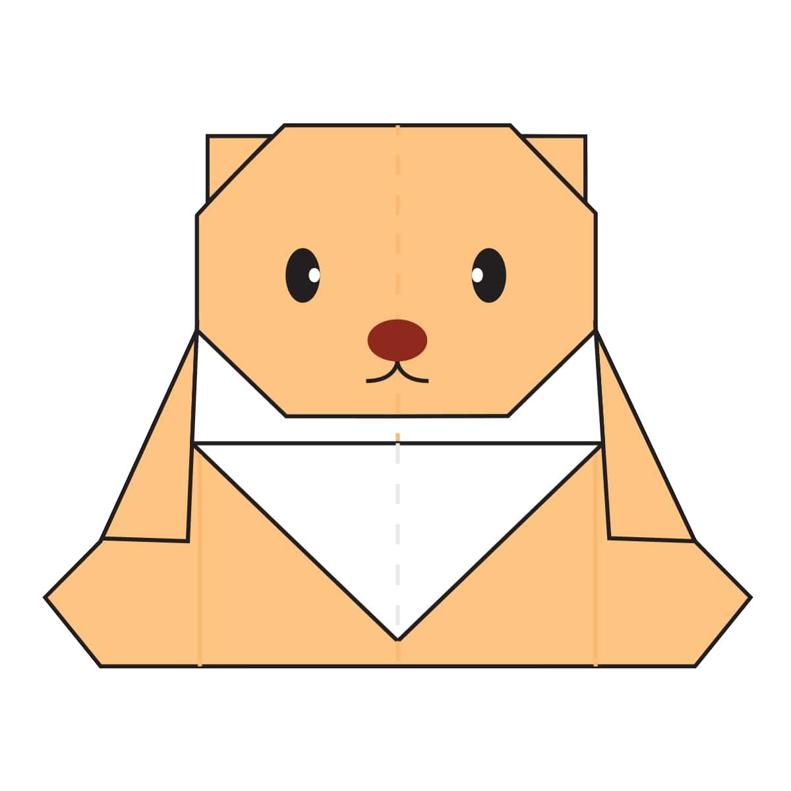
Interesting Facts about Teddy Bear
- The old and rare Teddy Bears are highly valuable.
- Teddy Bear is considered as a symbol of sympathy, congratulation and love.
- The arms, heads and legs of Teddy Bears are attached using safety joints.
Eiffel Tower

Interesting Facts about Eiffel Tower
- The Eiffel Tower Was the World’s Tallest Structure for 41 Years.
- Only One Person Died in the Construction of the Eiffel Tower.
- The Eiffel Tower Was Supposed to Be Torn Down in 1919.
Ladybug
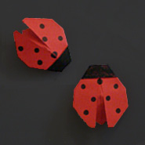
Interesting Facts about Ladybug
- Ladybugs have been in space.
- When ladybugs fly, they beat their wings about 85 times per second.
- Ladybugs are the symbol of luck.
Fox
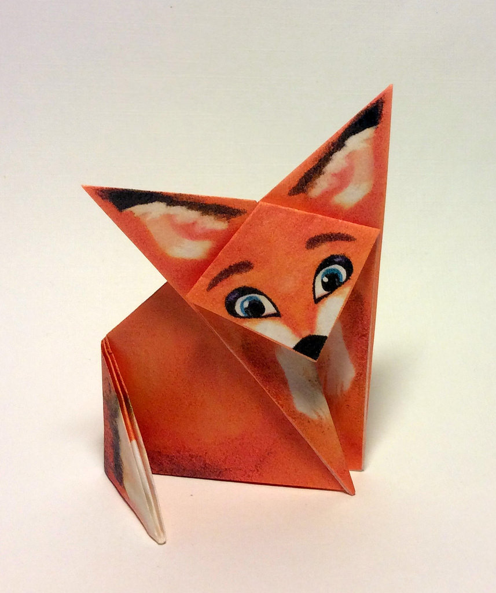
Interesting Facts about Fox
- They use earth’s magnetic field to hunt their prey.
- Even though foxes are related to wolves, they have more in common with cats.
- Speaking of whiskers, they have some on their legs.
Turtle
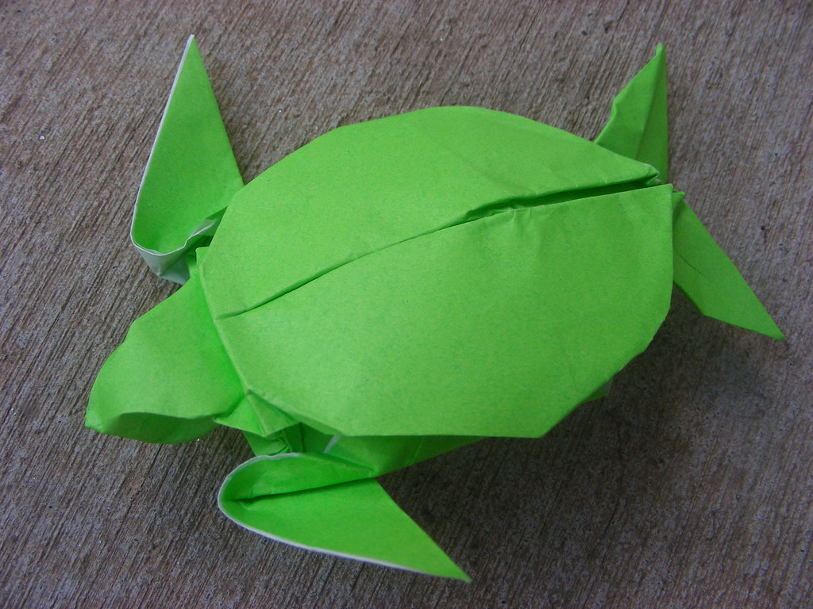
Interesting Facts about Turtle
- It is a cold-blooded reptile.
- They are thought to have exceptional night vision due to many rod cells in their retinas.
- They possess glands near their eyes that produce salty tears to rid excess salt.
T-Rex
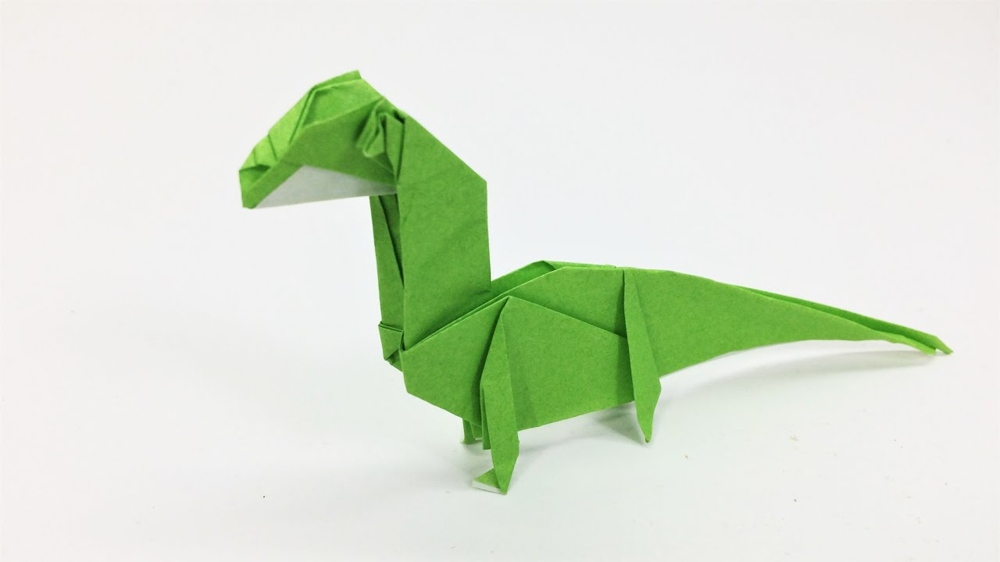
Interesting Facts about T-rex
- It is believed this predator could eat up to 230 kilograms of meat in one bite.
- The name Tyrannosaurus rex means “king of the tyrant lizards”.
- T-Rex had strong thighs and a large tail to counterbalance its skull weight.
Butterfly
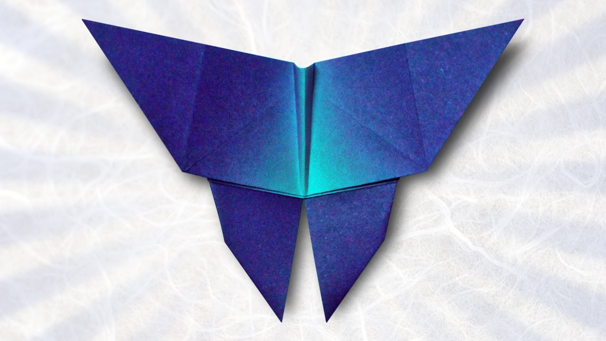
Interesting Facts about Butterfly
- Butterflies Taste With Their Feet.
- Butterflies Drink From Mud Puddles.
- Their wings are clear; colors come from scale light reflections.
Lion
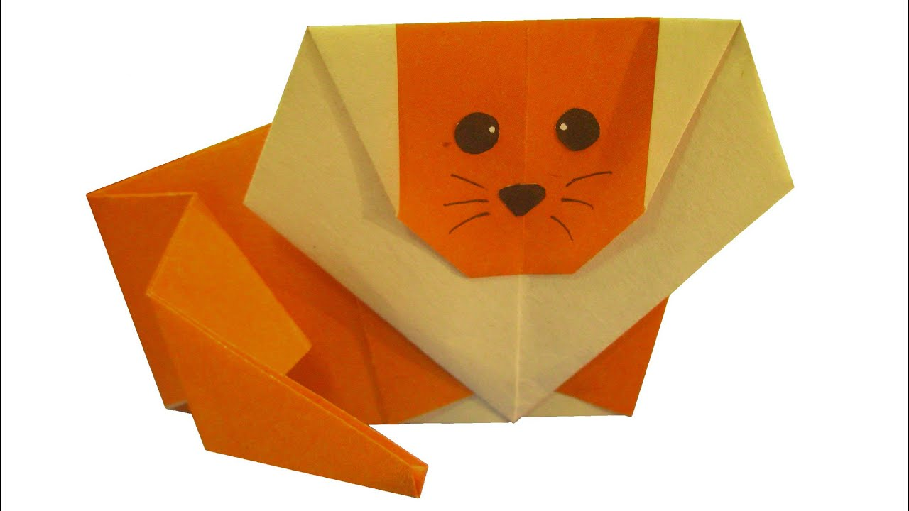
Interesting Facts about Lion
- A lion may sleep up to 20 hours a day.
- A lion’s heels don’t touch the ground when it walks.
- A lion’s roar can be heard from as far as 5 miles away.
Swan
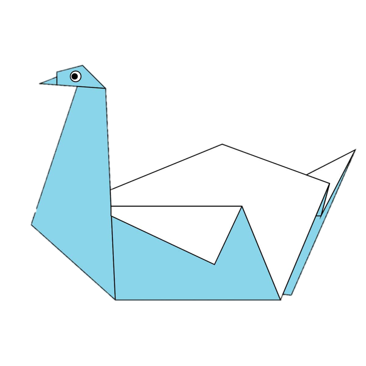
Interesting Facts about Swan
- They are the largest flying birds.
- Swans are angelic creatures.
- Swans can live in environments like meadows, lakes, ponds, and wetlands.
Shark
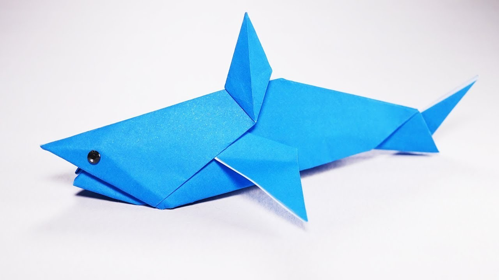
Interesting Facts about Shark
- Sharks do not have bones.
- Sharks have special electroreceptor organs.
- Shark skin feels similar to sandpaper.
Rabbit
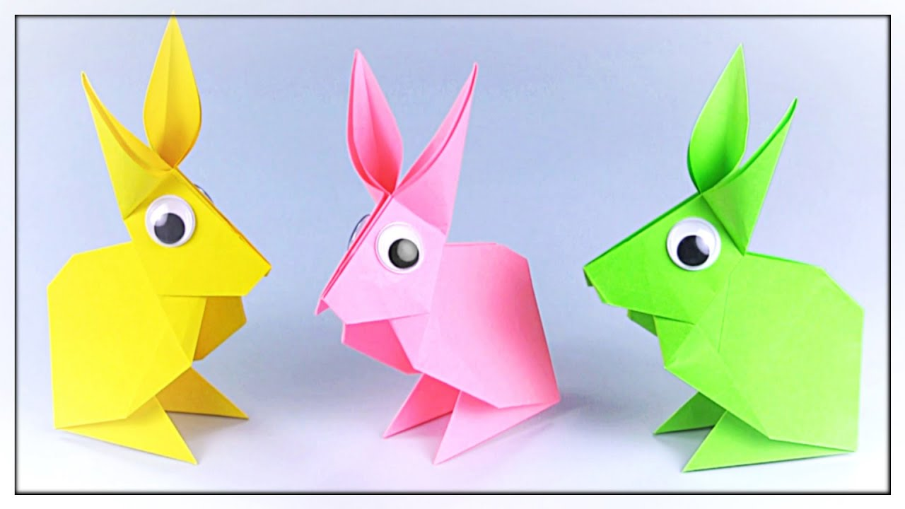
Interesting Facts about Rabbit
- A rabbit’s teeth never stop growing.
- Rabbits perform an athletic happy leap mid-air known as a 'binky'.
- They chew 120 times a minute and have over 17,000 taste buds.
Peacock
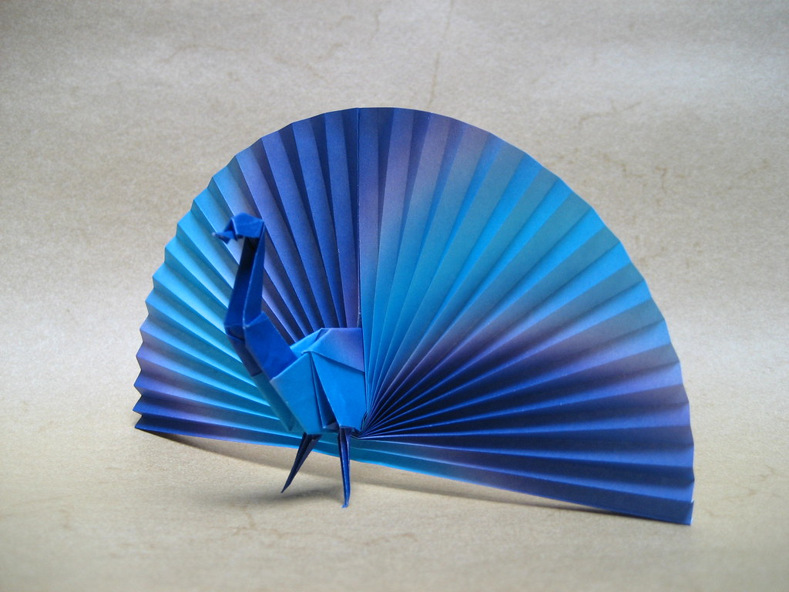
Interesting Facts about Peacock
- Peacocks Are Not Born With Fancy Feathers.
- Peacocks make Unpleasant Sounds.
- A group of peafowl is called a party, muster, ostentation or pride.
Cat
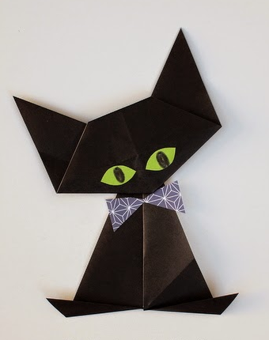
Interesting Facts about Black Cat
- Black cats were once worshipped as Gods.
- Black cats were not always considered bad luck.
- October 27th is National Black Cat Day.